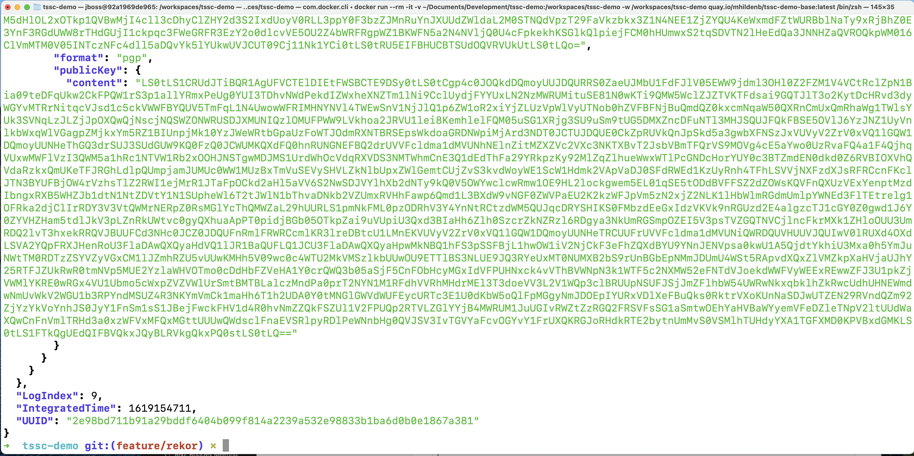
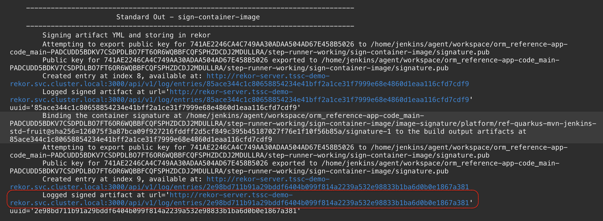
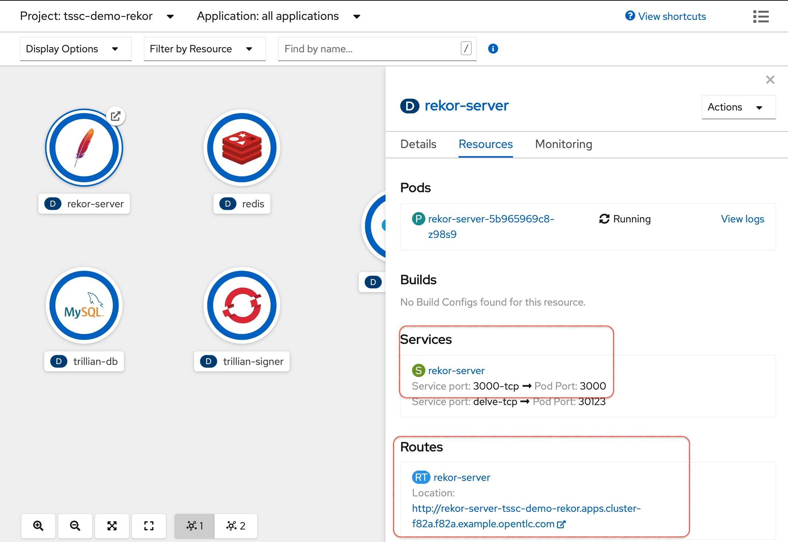
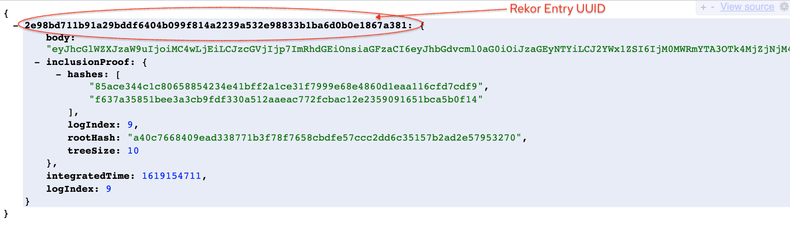
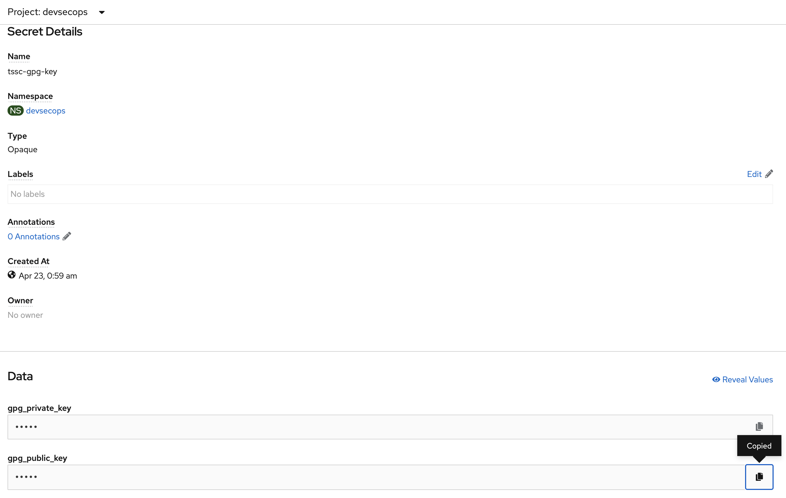

Secure Software Factory Demo
Digital Attestation and Auditing with Rekor
-
First we need to setup different windows to show off different aspects of rekor
-
Make sure one of the tabs you have open are the Jenkins results from the previous section

-
Setup a suitably large font shell in which to demonstrate most of what has been saved into Rekor, something like you see to the right
-
Navigate to the root of the git repo you cloned here
-
Run the following command to ensure that you have all the necessary tools in which to demonstrate the aspects of this section
docker run --rm -it -v $(pwd):/workspaces/tssc-demo -w /workspaces/tssc-demo quay.io/mhildenb/tssc-demo-base:latest /bin/zsh -
Inside the shell, log into the target openshift cluster as a
cluster-admin -
Once logged in make sure you re-run shell setup so that you can get the (external) external
REKOR_SERVERpublished. ${DEMO_HOME}/scripts/shell-setup.shExporting REKOR_SERVER for use with rekor cli commands (rekor host is: rekor-server-tssc-demo-rekor.apps.cluster-f82a.f82a.example.opentlc.com)
-
-
Copy the last URL published by the sign container image step and assign it to REKOR_URL in the
Shell -
In the
Browsernavigate to the Developer Perspective oftssc-demo-rekorproject. Show the resources of the rekor-server Deployment as shown -
Explain that the
REKOR_URLthat ploigos used to access rekor was the Kubernetes SVC address of the rekor server. But it has also been exposed external to the cluster -
Let’s call into rekor to see the information about the build we just completed. First we’ll need to translate the service local address into the public route. Run the following command in the shell to get this:
echo ${REKOR_URL} | sed -e "s#http://rekor-server.tssc-demo-rekor.svc.cluster.local:3000#${REKOR_REKOR_SERVER}#g"http://rekor-server-tssc-demo-rekor.apps.cluster-f82a.f82a.example.opentlc.com/api/v1/log/entries/2e98bd711b91a29bddf6404b099f814a2239a532e98833b1ba6d0b0e1867a381 -
Copy the output of the above command and paste the URL into a new tab of the browser
-
Point out the different fields such as rootHash and tree size that betray the Merkle tree that is behind the rekor implementation

-
-
Copy the uuid from the previous entry and paste this into the
ShellasUUID=<pasted value> -
Show the help of the rekor command line to show some of the options possible
rekor --helpRekor command line interface tool Usage: rekor [command] Available Commands: get Rekor get command help Help about any command loginfo Rekor loginfo command logproof Rekor logproof command search Rekor search command upload Upload an artifact to Rekor verify Rekor verify command Flags: --api-key string API key for api.rekor.dev --config string config file (default is $HOME/.rekor.yaml) --format format Command output format (default default) -h, --help help for rekor --rekor_server url Server address:port (default https://api.rekor.dev) --store_tree_state whether to store tree state in between invocations for additional verification (default true)
Using Rekor to Review "Build Nodes"
-
Ploigos wrote two "build output node" entries into Rekor. We need to understand Rekor’s storage format to get them out.
-
Let’s take a closer look at that format in the shell by running the following command (using the
UUIDthat we pasted earlier):LAST_REKOR_ENTRY=$(rekor get --format json --uuid $UUID ) echo ${LAST_REKOR_ENTRY} | jq{ "Body": { "RekordObj": { "data": { "hash": { "algorithm": "sha256", "value": "341dfa0799826c638e69dc23dd8c320a397718654fc5f003eb535347fe659995" } }, "extraData": "eyJzdGVwTmFtZSI6ICJzaWduLWNvbnRhaW5lci1pbWFnZSIsICJzdGVwT3V0cHV0IjogIm93R2J3TXZNd01FWXRQSkZ5UVh1c25iRzB3ZjJKREVrTklXTFZTc2xGMldXWkNZbjVpaFpWU3RscHFUbWxXU1dWSUxZS2ZuSjJhbEZ1a1dwYWFsRnFYbkpxVXBXU25tcEZhWEZ1bENKbE5TeTR0VGsvSUppdmNRQ0lKR2NVMXBjQWhST3N6QksxQU1UcVJXSnVRVTVxWHI1QlVCRGM1TDFrdk56OVF0eUVrdlM4b3R5OVlIRzZoYVdKaFpsQXczTUxjdlR6VXJOeTg3TUs5WXRMa25SVFNzcXpTeXhNdFF6MERQU3pVM016Rk9xMVZIS3pFMU1UMFZ5Vm01aVhtWmFhbkdKYmtwbU9wQUNPcTQ0STlISTFNekswTWpNd053MHpUalJ3andwT2RIQU1zM1N5TnpJMEN3dEpTVXR6U2pGTkRuTndzUXkyZGpTTk1uRTFOREMzTURJUE0zY0xOVXd6ZEFnemRRc3ljSTBFV1JaU1dVQnlMdUpKZm01bWNrS3lmbDVKVUJYcEJZcEZHZW01eVdXbEJhbGdoVGxGNVJrNXVkQndpMjVLQldvdUFpaHgxVFBWTTlJQ1doU1ppN1FkY0J3VUxJeU5ETzBORFExTVRjMHFLM3RaRFJtWVdEa1lKQVZVMlF4T0g2SFMrSGZMQUd2WStkdXdPS0hsUWtVTnd4Y25BSXdrYTkzMmYvd2JnNlpibExKVmpuaFBPL3hvSTNUdXY2VTJvckptN3p4VFh0Y3UzSUJlOHIzcWkxaWRuZjFpLy9OZi9UUWRNc1Y5cDB6czJaNVc1eGEraytSNDFSd3JaWG5wWmt2cnY3M1VKTnlNbitxejNQNVF2WnZGbzdGZHlvZnBPOW1MZFk4dHl5VjQ5WW1wMUNQS2R0ZVgyRUk4MDhvODlBNmFYajZuMDlHempGNWFlTzJ5NEd5TlpjbUdUbnNPUHAydStUOHlRMlBUL3htY251eStkS1owa2NYYkUxcU50OXJQeHBlOW16VkJzN043WWVTZlo1NU94cjJCZGhXVGl4MzVqMGpvSGhSWW9adlE1T3Q0d3ltQzc5MnplZmNlYlp1NlpmL2VqYytzRVh2aUdiTFd5cnZmV2VuZ1ludjZaT2ZIVVdYZjVnVnIyalg5dmo2SEkva0tkeWUzZCtTWWpmNnpXRnFMb3JycTg0SEFBPT0iLCAicHJldmlvdXNSZWtvclVVSUQiOiAiODVhY2UzNDRjMWM4MDY1ODg1NDIzNGU0MWJmZjJhMWNlMzFmNzk5OWU2OGU0ODYwZDFlYWExMTZjZmQ3Y2RmOSJ9", "signature": { "content": "LS0tLS1CRUdJTiBQR1AgU0lHTkFUVVJFLS0tLS0KCmlRRXpCQUFCQ0FBZEZpRUVNTWZjQ2lEK21oQkt4czdZVXFub2ROQUxkb2NGQW1DQ1Z4Y0FDZ2tRVXFub2ROQUwKZG9mcWxBZi9hbUZhNXMzdC82dUtDYVhaSEd5eHhFQlJ0eVgydWZYTmtiRHVBS1NIdHBTdXI0eTUxbGl2NlVWVwpSTTZYekVmR3lDV1ZBMGZWcTR1K2Q3M0NVVnd5Q24reEJtdGhuSVAzVVM5dHlOL2xOTkp1QVBwMjI4cll3cDhyClZHY2d3S2IxdUoyV0RLL3ppY0F3bzZJMnRuYnJXUUdZWldaL2M0STNQdVpzT29FaVkzbkx3Z1N4NEE1ZjZYQU4KeWxmdFZtWURBblNaTy9xRjBhZ0E3YnF3RGdUWW8rTHdGUjI1ckpqc3FWeGRFR3EzY2o0dlcvVE5OU2Z4bWRFRgpWZ1BKWFN5a2N4NVljQ0U4cFpkekhKSGlkQlpiejFCM0hHUmwxS2tqSDVTN2lHeEdQa3JNNHZaQVROQkpWM016ClVmMTM0V05INTczNFc4dll5aDQvYk5lYUkwUVJCUT09Cj11Nk1YCi0tLS0tRU5EIFBHUCBTSUdOQVRVUkUtLS0tLQo=", "format": "pgp", "publicKey": { "content": "LS0tLS1CRUdJTiBQR1AgUFVCTElDIEtFWSBCTE9DSy0tLS0tCgp4c0JOQkdDQmoyUUJDQURRS0ZaeUJMbU1FdFJlV05EWW9jdml3OHl0Z2FZM1V4VCtRclZpN1Bia09teDFqUkw2CkFPQW1rS3p1allYRmxPeUg0YUI3TDhvNWdPekdIZWxheXNZTm1lNi9CclUydjFYYUxLN2NzMWRUMituSE81N0wKTi9QMW5WclZJZTVKTFdsai9GQTJlT3o2KytDcHRvd3dyWGYvMTRrNitqcVJsd1c5ckVWWFBYQUV5TmFqL1N4UwowWFRIMHNYNVl4TWEwSnV1NjJlQ1p6ZW1oR2xiYjZLUzVpWlVyUTNob0hZVFBFNjBuQmdQZ0kxcmNqaW50QXRnCmUxQmRhaWg1TWlsYUk3SVNqLzJLZjJpOXQwQjNscjNQSWZONWRUSDJXMUNIQzlOMUFPWW9LVkhoa2JRVU1lei8KemhlelFQM05uSG1XRjg3SU9uSm9tUG5DMXZncDFuNTl3MHJSQUJFQkFBSE5OVlJ6YzJNZ1UyVnlkbWxqWlVGagpZMjkxYm5RZ1BIUnpjMk10YzJWeWRtbGpaUzFoWTJOdmRXNTBRSEpsWkdoaGRDNWpiMjArd3NDT0JCTUJDQUE0CkZpRUVkQnJpSkd5a3gwbXFNSzJxVUVyV2ZrV0xVQ1lGQW1DQmoyUUNHeThGQ3drSUJ3SUdGUW9KQ0FzQ0JCWUMKQXdFQ0hnRUNGNEFBQ2drUVVFcldma1dMVUNhNElnZitMZXZVc2VXc3NKTXBvT2JsbVBmTFQrVS9MOVg4cE5aYwo0UzRvaFQ4a1F4QjhqVUxwMWFlVzI3QWM5a1hRc1NTVW1Rb2xOOHJNSTgwMDJMS1UrdWhOcVdqRXVDS3NMTWhmCnE3Q1dEdThFa29YRkpzKy92MlZqZlhueWwxWTlPcGNDcHorYUY0c3BTZmdEN0dkd0Z6RVBIOXVhQVdaRzkxQmUKeTFJRGhLdlpQUmpjamJUMUc0WW1MUzBxTmVuSEVySHVLZkNlbUpxZWlGemtCUjZvS3kvdWoyWE1ScW1Hdmk2VApVaDJ0SFdRWEd1KzUyRnh4TFhLSVVjNXFzdXJsRFRCcnFKclJTN3BYUFBjOW4rVzhsTlZ2RWI1ejMrR1JTaFpOCkd2aHl5aVV6S2NwSDJVYlhXb2dNTy9kQ0V5OWYwclcwRmw1OE9HL2lockgwem5EL01qSE5tODdBVFFSZ2dZOWsKQVFnQXUzVExYenptMzdIbngxRXB5WHZJb1dtN1NtZDVtY1N1SUpheWl6T2tJWlN1bThvaDNkb2VZUmxRVHhFawp6Qmd1L3BXdW9vNGF0ZWVPaEU2K2kzWFJpVm5zN2xjZ2NLK1lHbWlmRGdmUmlpYWNEd3FlTEtrelg1OFRka2djClIrRDY3V3VtQWMrNERpZ0RsMGlYcThQMWZaL29hUURLS1pmNkFML0pzODRhV3Y4YnNtRCtzdWM5QUJqcDRYSHIKS0FMbzdEeGxIdzVKVk9nRGUzd2E4algzcTJ1cGY0Z0gwd1J6Y0ZYVHZHam5tdlJkV3pLZnRkUWtvc0gyQXhuaApPT0pidjBGb05OTkpZai9uVUpiU3Qxd3BIaHh6Zlh0SzcrZkNZRzl6RDgya3NkUmRGSmpOZEI5V3psTVZGQTNVCjlncFkrMXk1ZHloOUU3UmRDQ2lvT3hxekRRQVJBUUFCd3NHc0JCZ0JDQUFnRmlFRWRCcmlKR3lreDBtcU1LMnEKVUVyV2ZrV0xVQ1lGQW1DQmoyUUNHeTRCUUFrUVVFcldma1dMVUNiQWRDQUVHUUVJQUIwV0lRUXd4OXdLSVA2YQpFRXJHenRoU3FlaDAwQXQyaHdVQ1lJR1BaQUFLQ1JCU3FlaDAwQXQyaHpwMkNBQ1hFS3pSSFBjL1hwOW1iV2NjCkF3eFhZQXdBYU9YNnJENVpsa0kwU1A5QjdtYkhiU3Mxa0h5YmJuNWtTM0RDTzZSYVZyVGxCM1lJZmhRZU5vUUwKMHh5V09wc0c4WTU2MkVMSzlkbUUwOU9ETTlBS3NLUE9JQ3RYeUxMT0NUMXB2bS9rUnBGbEpNMmJDUmU4WSt5RApvdXQxZlVMZkpXaHVjaUJhY25RTFJZUkRwR0tmNVp5MUE2YzlaWHVOTmo0cDdHbFZVeHA1Y0crQWQ3b05aSjF5CnFObHcyMGxIdVFPUHNxck4vVThBVWNpN3k1WTF5c2NXMW52eFNTdVJoekdWWFVyWEExREwwZFJ3U1pkZjVWMlYKRE0wRGx4VU1Ubmo5cWxpZVZVWlUrSmtBMTBLalczMndPa0prT2NYN1M1RFdhVVRhMHdrMEl3T3doeVV3L2V1WQp3clBRUUpNSUFJSjJmZFlhbW54UWRwNkxqbklhZkRwcUdhUHNEWmdwNmUvWkV2WGU1b3RPYndMSUZ4R3NKYmVmCk1maHh6T1h2UDA0Y0tMNGlGWVdWUFEycURTc3E1U0dKbW5oQlFpMGgyNmJDOEpIYURxVDlXeFBuQks0RktrVXoKUnNaSDJwUTZEN29RVndQZm92ZjYzYkVoYnhJS0JyY1FnSm1sS1JBejFwckFHV1d4R0hvNmZZQkFSZUl1V2FPUQp2RTVLZGlYYjB4MWRUM1JuUGIvRWZtZzRGQ2FRSVFsSG1aSmtwOEhYaHVBaWYyemVFeDZleTNpV2ltUUdWaXQwCnFnVmlTRHd3a0xzWFVxMFQxMGttUUUwQWdsclFnaEVSRlpyRDlPeWNnbHg0QVJSV3IvTGVYaFcvOGYvY1FrUXQKRGJoRHdkRTE2bytnUmMvS0VSMlhTUHdyYXA1TGFXMD0KPVBxdGMKLS0tLS1FTkQgUEdQIFBVQkxJQyBLRVkgQkxPQ0stLS0tLQ==" } } } }, "LogIndex": 9, "IntegratedTime": 1619154711, "UUID": "2e98bd711b91a29bddf6404b099f814a2239a532e98833b1ba6d0b0e1867a381" } -
We can find our build node in the
extraDataas base64 encoded json. Thus we can pull out our build output node like this:LAST_BUILD_NODE=$(echo $LAST_REKOR_ENTRY | jq -r .Body.RekordObj.extraData | base64 -d ) echo ${LAST_BUILD_NODE} | jq{ "stepName": "sign-container-image", "stepOutput": "owGbwMvMwMEYtPJFyQXusnbG0wf2JDEkNIWLVSslF2WWZCYn5ihZVStlpqTmlWSWVILYKfnJ2alFukWpaalFqXnJqUpWSnmpFaXFulCJlNSy4tTk/IJivcQCIJGcU1pcAhROszBK1AMTqRWJuQU5qXr5BUBDc5L1kvNz9QtyEkvS8oty9YHG6haWJhZlAw3MLcvTzUrNy87MK9YtLknRTSsqzSyxMtQz0DPSzU3MzFOq1VHKzE1MT0VyVm5iXmZaanGJbkpmOpACOq44I9HI1MzK0MjMwNw0zTjRwjwpOdHAMs3SyNzI0CwtJSUtzSjFNDnNwsQy2djSNMnE1NDC3MDIPM3cLNUwzdAgzdQsycI0EWRZSWUByLuJJfm5mckKyfl5JUBXpBYpFGem5yWWlBalghTlF5Rk5udBwi25KBWouAihx1TPVM9ICWhSZi7QdcBwULIyNDO0NDQ1MTc0qK3tZDRmYWDkYJAVU2QxOH6HS+HfLAGvY+duwOKHlQkUNwxcnAIwka932f/wbg6ZblLJVjnhPO/xoI3Tuv6U2orJm7zxTXtcu3IBe8r3qi1idnf1i//Nf/TQdMsV9p0zs2Z5W5xa+k+R41RwrZXnpZkvrv73UJNyMn+qz3P5QvZvFo7FdyofpO9mLdY8tyyV49Ymp1CPKdteX2EI808o89A6aXj6n09GzjF5aeO2y4GyNZcmGTnsOPp2u+T8yQ2PT/xmcnuy+dKZ0kcXbE1qNt9rPxpe9mzVBs7N7YeSfZ55Oxr2BdhWTix35j0joHhRYoZvQ5Ot4wymC792zefcebZu6Zf/ejc+sEXviGbLWyrvfWengYnv6ZOfHUWXf5gVr2jX9vj6HI/kKdye3d+SYjf6zWFqLorrq84HAA==", "previousRekorUUID": "85ace344c1c80658854234e41bff2a1ce31f7999e68e4860d1eaa116cfd7cdf9" } -
Highlight the different fields of the build node
-
stepName: The ploigos step name that this output represents
-
stepOutput: The base64 encoded output of stepName
-
previousRekorUUID: The uuid of the previous Rekor entry that was made by the Ploigos toolchain
-
-
In this case, the last build output node contains the (detached) signature of the build image that was signed by the toolchain.
-
Point out that this signature binds the ploigos toolchain to the image.
-
Recording it in rekor binds the signature to the rest of the build output entries to provide extra security and provenance info
-
Verifying entry in Rekor
In this section we’ll verify the authenticity of what’s stored in Rekor and then use a subset of those artifacts to prove that what is in rekor is indeed the build signature.
-
In the
Shellshow the output of the rekor verify command to see what we need to verify our outputrekor verify --helpVerifies an entry exists in the transparency log through an inclusion proof Usage: rekor verify [flags] Flags: --artifact fileOrURLFlag path or URL to artifact file --entry fileOrURLFlag path or URL to pre-formatted entry file -h, --help help for verify --log-index logIndex the index of the entry in the transparency log --pki-format pkiFormat format of the signature and/or public key (default pgp) --public-key fileOrURLFlag path or URL to public key file --signature fileOrURLFlag path or URL to detached signature file --type typeFormat type of entry (default rekord) --uuid uuid UUID of entry in transparency log (if known) Global Flags: --api-key string API key for api.rekor.dev --config string config file (default is $HOME/.rekor.yaml) --format format Command output format (default default) --rekor_server url Server address:port (default https://api.rekor.dev) --store_tree_state whether to store tree state in between invocations for additional verification (default true) -
So to verify that it is this build’s container signature we’ll need three things
-
Artifact: In this case, our artifact is the container signature that we stored in Rekor
-
Signature: This is the signature of the Rekor entry itself. We will pull this out of Rekor
-
Public Key: The public key that was used to sign the Rekor entry.
-
Remember that it’s the Build Node that we signed in rekor, NOT the image signature alone. (The build node contains the image signature). One way we can get the artifact is out of rekor
-
We could have stored this build node json anywhere, but in this case we’re just going to reuse the
LAST_BUILD_NODEthat we found earlierARTIFACT_CONTENT=${LAST_BUILD_NODE}
-
Next we’ll get the Rekor Entry signature using the Rekor Entry itself
LAST_ENTRY_SIG=$(echo ${LAST_REKOR_ENTRY} | jq -r .Body.RekordObj.signature.content | base64 -d) echo ${LAST_ENTRY_SIG}-----BEGIN PGP SIGNATURE----- iQEzBAABCAAdFiEEMMfcCiD+mhBKxs7YUqnodNALdocFAmCCVxcACgkQUqnodNAL dofqlAf/amFa5s3t/6uKCaXZHGyxxEBRtyX2ufXNkbDuAKSHtpSur4y51liv6UVW RM6XzEfGyCWVA0fVq4u+d73CUVwyCn+xBmthnIP3US9tyN/lNNJuAPp228rYwp8r VGcgwKb1uJ2WDK/zicAwo6I2tnbrWQGYZWZ/c4I3PuZsOoEiY3nLwgSx4A5f6XAN ylftVmYDAnSZO/qF0agA7bqwDgTYo+LwFR25rJjsqVxdEGq3cj4vW/TNNSfxmdEF VgPJXSykcx5YcCE8pZdzHJHidBZbz1B3HGRl1KkjH5S7iGxGPkrM4vZATNBJV3Mz Uf134WNH5734W8vYyh4/bNeaI0QRBQ== =u6MX -----END PGP SIGNATURE-----
-
As part of its platform install, the ploigos public key can be pull out of a secret in the
devsecopsproject -
In the
Browsernavigate to the Secrets section of thedevsecopsproject and search fortssc-gpg-key -
On the secret details, click on the copy icon
 -
Paste into the shell as follows:
PLOIGOS_PUBLIC_KEY=$(echo "<pasted content>")NOTE: Alternatively, you can just run the following command in the
Shellto easily pull out the secret:PLOIGOS_PUBLIC_KEY=$(oc get secret tssc-gpg-key -n devsecops -o jsonpath='{.data.gpg_public_key}' | base64 -d) echo ${PLOIGOS_PUBLIC_KEY}
-
-
-
Once you collected all three elements, you can have rekor verify the build entry like this:
rekor verify --artifact <(echo -n ${ARTIFACT_CONTENT}) --public-key <(echo ${PLOIGOS_PUBLIC_KEY}) --signature <(echo ${LAST_ENTRY_SIG}) -
Point out that the output of the above command does two verification steps
-
Signature Verification: Checks to make sure that the signature actually matches the artifact and public key
-
Independent "Inclusion Proof": The rekor cli does it’s own local verification of the Merkle Tree hashes to ensure that this entry is actually part of the (Trillian) immutable database
Current Root Hash: 5fb7b1a022dd3be05cf5fef2df707643c7a53017308cd2c89ed001aa548443c0 Entry Hash: 2e98bd711b91a29bddf6404b099f814a2239a532e98833b1ba6d0b0e1867a381 Entry Index: 9 Current Tree Size: 16 Inclusion Proof: SHA256(0x01 | 85ace344c1c80658854234e41bff2a1ce31f7999e68e4860d1eaa116cfd7cdf9 | 2e98bd711b91a29bddf6404b099f814a2239a532e98833b1ba6d0b0e1867a381) = 238a209ff9d27b57a35cd1356c3589b992c360cad310e769991a790d15e7cfcb SHA256(0x01 | 238a209ff9d27b57a35cd1356c3589b992c360cad310e769991a790d15e7cfcb | 5e50963e898b26e511448b10335fa983a4d38a90f957fbfe534071ec6adcde85) = 21525b993be846858237c25378378bb31ecb71d4c26fb65a27ac2fd91e7fe427 SHA256(0x01 | 21525b993be846858237c25378378bb31ecb71d4c26fb65a27ac2fd91e7fe427 | 85ccf7b3b973d92891ddc285bebe1d94e75a09cd662046171a376a178ac1f1f2) = 599ffe69cdeaab7e7ed04c7d8d57ff4bd0c9285ebd103ab1355f29d873746943 SHA256(0x01 | f637a35851bee3a3cb9fdf330a512aaeac772fcbac12e2359091651bca5b0f14 | 599ffe69cdeaab7e7ed04c7d8d57ff4bd0c9285ebd103ab1355f29d873746943) = 5fb7b1a022dd3be05cf5fef2df707643c7a53017308cd2c89ed001aa548443c0
-
Searching Rekor
-
Besides knowing the exact UUID of the rekor entry, we can also search rekor for entries by any of the following:
-
Public Key: See all the entries that have artifacts signed by a given public key
-
Artifact Content: Find all the entries that match a given artifact’s content
-
Artifact SHA: Find all the entries that match a given artifact’s sha
rekor search --helpSearches the Rekor index to find entries by artifact or public key Usage: rekor search [flags] Flags: --artifact fileOrURLFlag path or URL to artifact file -h, --help help for search --pki-format pkiFormat format of the signature and/or public key (default pgp) --public-key fileOrURLFlag path or URL to public key file --sha uuid the SHA256 sum of the artifact Global Flags: --api-key string API key for api.rekor.dev --config string config file (default is $HOME/.rekor.yaml) --format format Command output format (default default) --rekor_server url Server address:port (default https://api.rekor.dev) --store_tree_state whether to store tree state in between invocations for additional verification (default true)
-
-
Let’s prove that we can find our entry in rekor based on the SHA of the current
LAST_BUILD_NODEARTIFACT_SHA=$(sha256sum <(echo -n ${ARTIFACT_CONTENT}) | awk '{print $1}') rekor search --sha ${ARTIFACT_SHA}Found matching entries (listed by UUID): 2e98bd711b91a29bddf6404b099f814a2239a532e98833b1ba6d0b0e1867a381 -
Prove that this is our entry by grepping on the
UUIDrekor search --sha ${ARTIFACT_SHA} | grep ${UUID} -
We can also search more broadly. Let’s now see all the entries that have been added by Ploigos using its public key
rekor search --public-key <(echo $PLOIGOS_PUBLIC_KEY) -
This should yield output like the below (you might only have two entries based on the REKOR server)
Found matching entries (listed by UUID): e7f27ffd266ffbb20e7d0c3bece372a6798e77e3cf974e7b9d5af63c59fe86e5 d6be79fb60d3b81ba19466d37f5a59dd728eecb920b5b20c8dbbc41b83b98544 a3e16327959823f14d998155d26f85860694f205c418a06982c7c3ef5adb88a4 225b595ec764489bab90058b856020af9592fad97147404490a2669b6db64041 2e98bd711b91a29bddf6404b099f814a2239a532e98833b1ba6d0b0e1867a381 85ace344c1c80658854234e41bff2a1ce31f7999e68e4860d1eaa116cfd7cdf9 a4189b538ca8709c785047dd4523e58dfe2ac9b2abf2a87a50d41b86ac21db7e ea359567654739077dc1408d07c260fcb1a2cb1e3d51754e6f176eb2b582625f 98416c3920778053289ed0a22dd7c1e1d53886412ab8cfce93bbc3c5a3a6becb 882b77e04f2067038dd5511be744e7aae1396d7d6480f789cc098eb3f65e7314 5fb253a9eee83eb77ca29bb9cb6bd62ee0b4f936df59c36ba50a2e4c1212074a 5a272da7778e4c383f08d42b740ec99f36fe521aae83fc6b2496304ee81be17d e012638d452464ed63ff0580638f44058834fb32dd007a528748fa3dbf44fdb4 37f6d82c41d5fd824ec22688feeef7eec6cd3a5b4e7c36735ffeeacad99edbf9 -
Let’s verify that the entry we were just looking at is included in the list returned:
rekor search --public-key <(echo $PLOIGOS_PUBLIC_KEY) | grep $UUID2e98bd711b91a29bddf6404b099f814a2239a532e98833b1ba6d0b0e1867a381 -
Point out that you can have multiple rekor databases. If we search for this public key in the public rekor database we won’t find it
rekor search --public-key <(echo $PLOIGOS_PUBLIC_KEY) --rekor_server https://api.rekor.devNo matching entries were found
Inspecting Build Output
-
Now that we’re satisfied with the provenance of the build output, let’s do some checks on it. First, let’s review what’s in the node:
echo ${LAST_BUILD_NODE} | jq{ "stepName": "sign-container-image", "stepOutput": "owGbwMvMwMEYtPJFyQXusnbG0wf2JDEkNIWLVSslF2WWZCYn5ihZVStlpqTmlWSWVILYKfnJ2alFukWpaalFqXnJqUpWSnmpFaXFulCJlNSy4tTk/IJivcQCIJGcU1pcAhROszBK1AMTqRWJuQU5qXr5BUBDc5L1kvNz9QtyEkvS8oty9YHG6haWJhZlAw3MLcvTzUrNy87MK9YtLknRTSsqzSyxMtQz0DPSzU3MzFOq1VHKzE1MT0VyVm5iXmZaanGJbkpmOpACOq44I9HI1MzK0MjMwNw0zTjRwjwpOdHAMs3SyNzI0CwtJSUtzSjFNDnNwsQy2djSNMnE1NDC3MDIPM3cLNUwzdAgzdQsycI0EWRZSWUByLuJJfm5mckKyfl5JUBXpBYpFGem5yWWlBalghTlF5Rk5udBwi25KBWouAihx1TPVM9ICWhSZi7QdcBwULIyNDO0NDQ1MTc0qK3tZDRmYWDkYJAVU2QxOH6HS+HfLAGvY+duwOKHlQkUNwxcnAIwka932f/wbg6ZblLJVjnhPO/xoI3Tuv6U2orJm7zxTXtcu3IBe8r3qi1idnf1i//Nf/TQdMsV9p0zs2Z5W5xa+k+R41RwrZXnpZkvrv73UJNyMn+qz3P5QvZvFo7FdyofpO9mLdY8tyyV49Ymp1CPKdteX2EI808o89A6aXj6n09GzjF5aeO2y4GyNZcmGTnsOPp2u+T8yQ2PT/xmcnuy+dKZ0kcXbE1qNt9rPxpe9mzVBs7N7YeSfZ55Oxr2BdhWTix35j0joHhRYoZvQ5Ot4wymC792zefcebZu6Zf/ejc+sEXviGbLWyrvfWengYnv6ZOfHUWXf5gVr2jX9vj6HI/kKdye3d+SYjf6zWFqLorrq84HAA==", "previousRekorUUID": "85ace344c1c80658854234e41bff2a1ce31f7999e68e4860d1eaa116cfd7cdf9" } -
Next we check that the image signature (found at
stepOutputin theLAST_BUILD_OUTPUT) actually was signed by rekorIMAGE_SIG_CONTENT=$(echo ${LAST_BUILD_NODE} | jq -r .stepOutput | base64 -d) gpg --decrypt <(echo -n ${IMAGE_SIG_CONTENT}) | jqgpg: Signature made Fri Apr 23 05:11:50 2021 UTC gpg: using RSA key 30C7DC0A20FE9A104AC6CED852A9E874D00B7687 gpg: Good signature from "Tssc ServiceAccount <tssc-service-account@redhat.com>" [unknown] gpg: WARNING: This key is not certified with a trusted signature! gpg: There is no indication that the signature belongs to the owner. Primary key fingerprint: 741A E224 6CA4 C749 AA30 ADAA 504A D67E 458B 5026 Subkey fingerprint: 30C7 DC0A 20FE 9A10 4AC6 CED8 52A9 E874 D00B 7687 { "critical": { "identity": { "docker-reference": "nexus-docker-devsecops.apps.cluster-f82a.f82a.example.opentlc.com/platform/ref-quarkus-mvn-jenkins-std-fruit:1.0.2-main" }, "image": { "docker-manifest-digest": "sha256:126075f3a87bca09f927216fddff2d5cf849c395b45187027f76e1f10f56b85a" }, "type": "atomic container signature" }, "optional": { "creator": "atomic 5.5.2", "timestamp": 1619154710 } } -
Now let’s take a look at the previous entry and see what we can learn about the making of this image. We can find the previous node by making use of
previousRekorUUIDin theLAST_BUILD_OUTPUT-
NOTE: Normally this would be a chain of entries, each from the previous step of the build process, but for the demo we only have one previous entry
PREVIOUS_BUILD_NODE_UUID=$(echo ${LAST_BUILD_NODE} | jq -r .previousRekorUUID) PREVIOUS_BUILD_NODE=$(rekor get --format json --uuid ${PREVIOUS_BUILD_NODE_UUID} | jq -r .Body.RekordObj.extraData | base64 -d ) echo ${PREVIOUS_BUILD_NODE} | jq
-
-
Inspect the output of the previous command (shown below). Point out:
-
previousRekorUUID: This is 0 indicating the end of the chain
-
stepName: For the demo, this is the same name as the last build output. But in production this would be the name of the previous step
-
stepOutput: In general, this would be all the logs/metadata from the step output. In our case this is just the output of the Ploigos run up to that point in the build chain
{ "stepName": "sign-container-image", "stepOutput": "c3RlcC1ydW5uZXItcmVzdWx0czoKICAgIGNvbnRhaW5lci1pbWFnZS1zdGF0aWMtY29tcGxpYW5jZS1zY2FuOgogICAgICAgID8gT3BlblNDQVAgLSBDb21wbGlhbmNlIC0gRXhhbXBsZSBDb21wbGlhbmNlIFByb2ZpbGUgZm9yIFVCSTggQ29udGFpbmVyIEltYWdlcwogICAgICAgICAgICBbQmFzZWQgb24geGNjZGZfb3JnLnNzZ3Byb2plY3QuY29udGVudF9wcm9maWxlX3N0... 4KICAgICAgICAgICAgc3VjY2VzczogdHJ1ZQo=", "previousRekorUUID": 0 }
-
-
Let’s take a look at the
stepOutputand show that this matches the build activities that led to this container image:vi <(echo ${PREVIOUS_BUILD_NODE} | jq -r .stepOutput | base64 -d) -
The previous command caused the build output to be opened in
vi(abbrieviated output below). You can then scroll through this output showing that this represents the whole of the buildstep-runner-results: container-image-static-compliance-scan: ? OpenSCAP - Compliance - Example Compliance Profile for UBI8 Container Images [Based on xccdf_org.ssgproject.content_profile_standard] : artifacts: html-report: description: '' value: /home/jenkins/agent/workspace/orm_reference-app-code_main-PADCUDD5BDKV7CSDPDLBO7FT6OR6WQBBFCQFSPHZDCDJ2MDULLRA/step-runner-working/container-image-static-compliance-scan/oscap-xccdf-report.html stdout-report: description: '' value: /home/jenkins/agent/workspace/orm_reference-app-code_main-PADCUDD5BDKV7CSDPDLBO7FT6OR6WQBBFCQFSPHZDCDJ2MDULLRA/step-runner-working/container-image-static-compliance-scan/oscap-xccdf-out xml-report: description: '' value: /home/jenkins/agent/workspace/orm_reference-app-code_main-PADCUDD5BDKV7CSDPDLBO7FT6OR6WQBBFCQFSPHZDCDJ2MDULLRA/step-runner-working/container-image-static-compliance-scan/oscap-xccdf-results.xml ... unit-test: Maven: artifacts: maven-output: description: Standard out and standard error from 'mvn test'. value: /home/jenkins/agent/workspace/orm_reference-app-code_main-PADCUDD5BDKV7CSDPDLBO7FT6OR6WQBBFCQFSPHZDCDJ2MDULLRA/step-runner-working/unit-test/mvn_test_output.txt surefire-reports: description: Surefire reports generated from 'mvn test'. value: /home/jenkins/agent/workspace/orm_reference-app-code_main-PADCUDD5BDKV7CSDPDLBO7FT6OR6WQBBFCQFSPHZDCDJ2MDULLRA/target/surefire-reports message: '' sub-step-implementer-name: Maven success: true